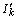
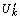
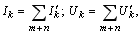

2.5. Метод наложения
Согласно принципу наложения ток (напряжение) в любой ветви схемы линейной электрической цепи (ЛЭЦ) может быть получен как сумма составляющих токов (напряжений), вызываемых в этой ветви поочередным действием источников напряжения и тока. Метод расчёта токов (напряжений) ветвей схемы ЛЭЦ, содержащей источники напряжения и тока, основанный на определении частичных токов (напряжений) при поочередном действии ЭДС Ek или тока Jk источников энергии и последующим алгебраическом сложении этих частичных токов  (напряжений ) в каждой ветви, называется методом наложения решений (методом суперпозиции), т. е. |
|  |
Внимание! При определении частичных токов (напряжений) ветвей от действия тока Jk или ЭДС Ek k-го источника энергии ветви с остальными ИТ разрываются, а идеальные ИН замыкаются накоротко, однако внутренние сопротивления ИН остаются в соответствующих ветвях.